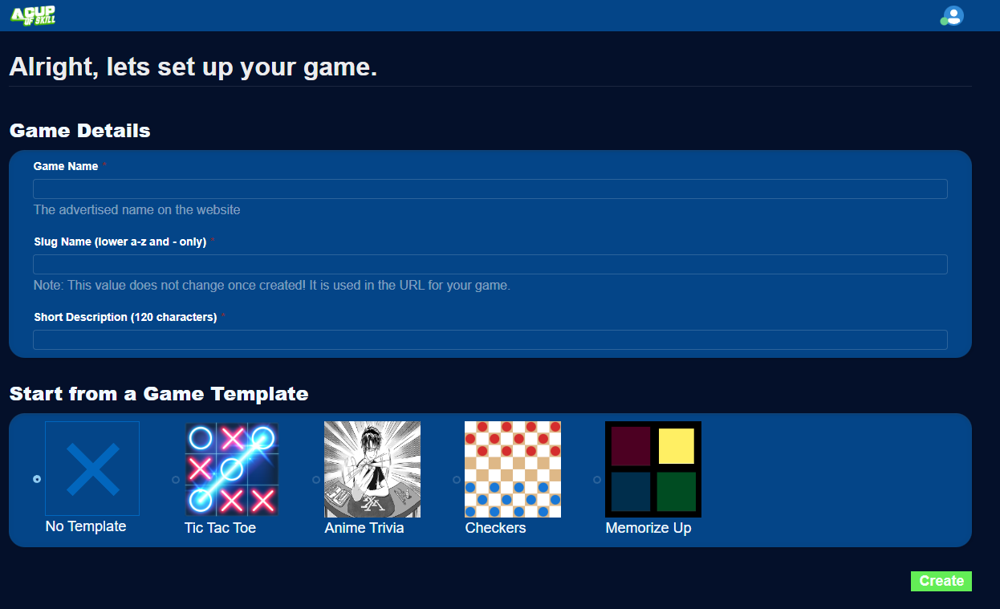
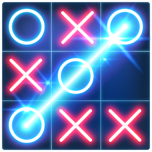
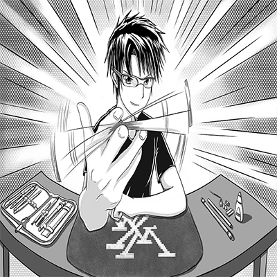
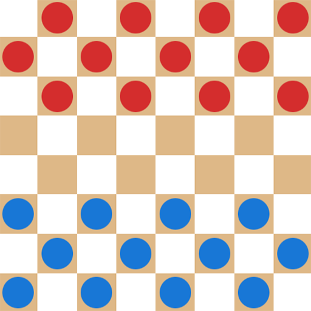
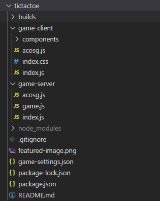

Getting Started
Create your own browser game using JavaScript frontend and backend with automatic multiplayer driven by JSON.
The platform supports realtime online turn-based games.
Focus on gameplay, let the platform handle everything else for free.
Become an ACOS Developer
In order to create games, you must be in our acosgames Github organization. Joining is free, simply follow the steps below.
- Visit the Developer Zone
- Follow the steps to sign in with Github and join our acosgames organization
Creating a new game
- Create a new game inside the Developer Zone.
- You may start from an existing game template or a blank template. I recommend starting from existing template.

Start from an existing Game Template
When creating a game in Developer Zone, you can choose from the available game templates
| Game Templates | |||
|---|---|---|---|
Tic Tac Toe git clone git@github.com:acosgames/tictactoe.gitBuilt with React |
 | Play on ACOS | Github Repo |
Anime Trivia git clone git@github.com:acosgames/anime-trivia-simple.gitBuilt with React |
 | Play on ACOS | Github Repo |
Checkers git clone git@github.com:acosgames/checkers.gitBuilt with React |
 | Play on ACOS | Github Repo |
Memorize Up git clone git@github.com:acosgames/memorize-up.gitBuilt with React |
 |
Play on ACOS | Github Repo |
After creating your game
A new repository matching the game_slug you provided will be created in acosgames organization with the game template code. You are granted admin access to this repository.
Navigate into the game management page and find your git clone command to copy.
git clone git@github.com:acosgames/game_slug.git
You will see directory structure like below once you clone to your system.

builds folder has the development and production builds for both client and server, including the webpack configs.
game-client has the frontend code in React for our game examples.
game-server has the backend code using JavaScript that taps into our globals functions.
game-settings.json will configure the screen size, min/max players and team configurations.
Running the game using simulator
NodeJS 16+ or 18+
NodeJS 16+ will work, but we recommend NodeJS 18+
Install
After cloning, navigate to the folder in a terminal and make sure to install the packages
npm install
Run
To start the simulator with your client and server code:
npm start
This will run the following apps:
- acosgames Simulator
game-client(ReactJS) with webpack watcher- Browser-Sync to restart iframe for game-client on code changes
game-server(NodeJS) with webpack watcher
Debug with VSCode Debug, add to launch.json
{
"command": "npm start",
"name": "Launch Tic Tac Toe",
"request": "launch",
"type": "node-terminal"
},
This is the preferred method for running your code, as it will allow you to properly close the concurrent processes created for simulator, client, and server.
Deploy Game
Deployment at this time is done from the command-line only. You will need your deploy command which is provided in the Developer Zone inside your game management page.
Example command:
npm run deploy -- tictactoe.FBC4864251084B188F1A6E63F70C38D3
Each of our game examples will build your code into *.js bundles, and upload them to acos.games. Each deployment is automatically versioned by an incrementing number which can be used to publish specific version.
The following files may be uploaded:
./builds/server/server.bundle.js./builds/client/client.bundle.js./builds/client/assets/*- all asset files in this folder, excluding sub-folders./game-server/database.json- optional json database that is immutable./game-settings.json- game settings configured from the simulator UI
Publish Game
When you think the game is ready for production, go to the Developer Zone and click Push to Production for that game. You can easily change which version is deployed from the game management page.